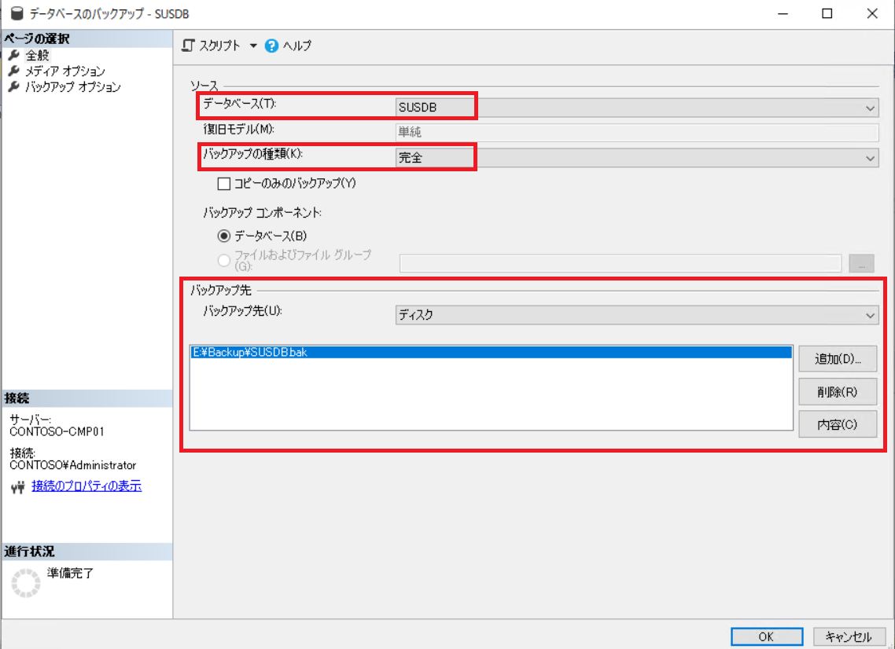
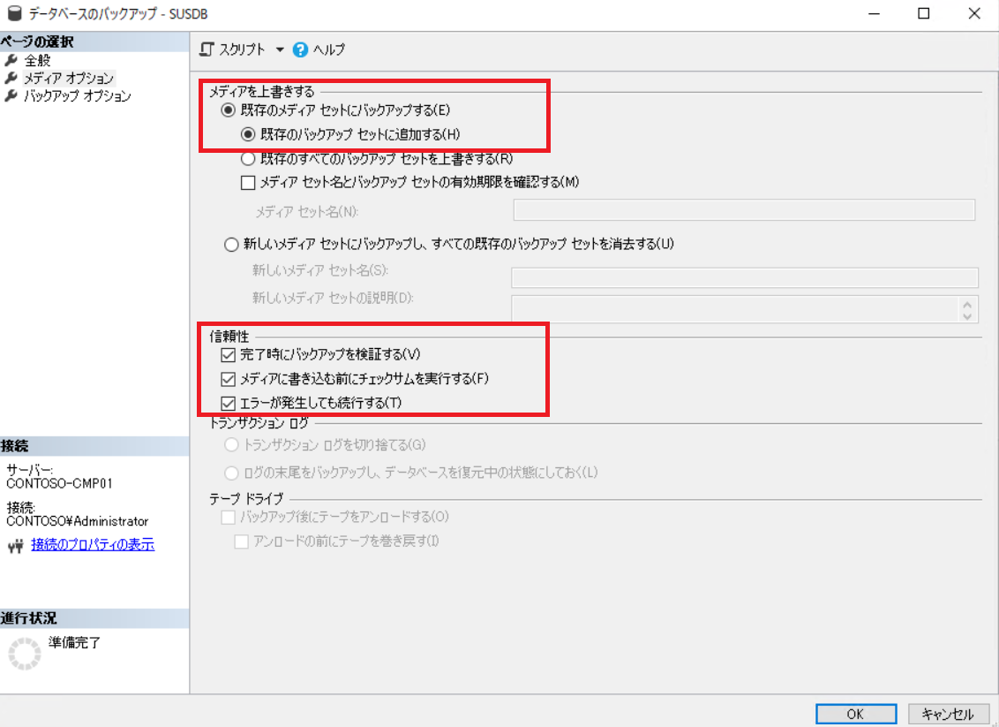
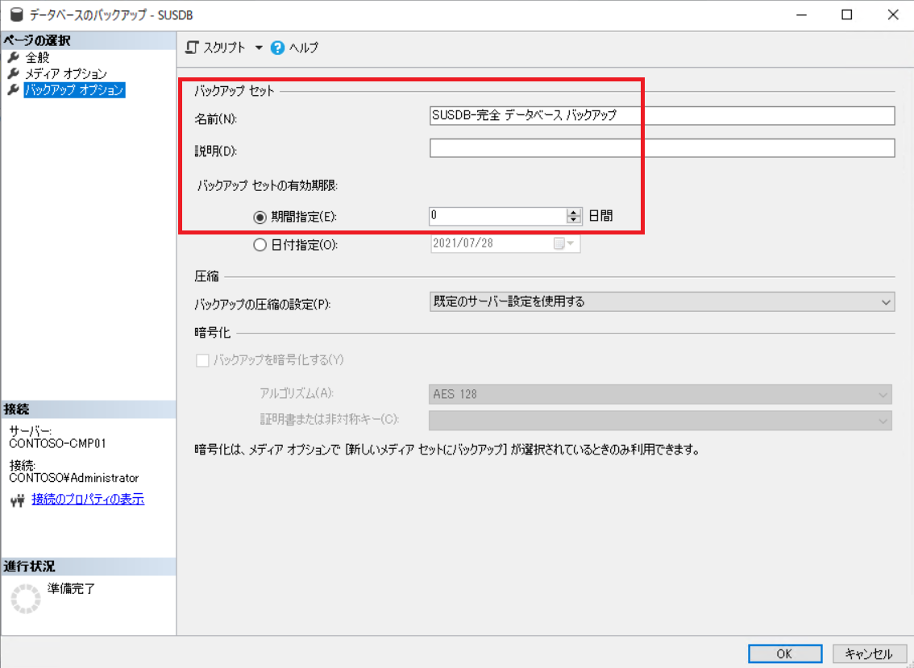
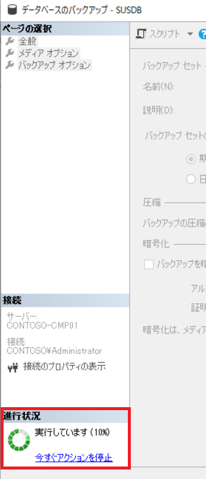

WSUS データベース内のレコードを変更する手順をご案内する際に、手順実施前に WSUS データベースのバックアップをご案内することがあります。
本手順を実施すると、WSUS データベース (SUSDB) のバックアップが取得できますので、万一問題がおきた場合でも、バックアップよりリストアが可能になります。
事前準備として、データベースに接続する管理ツールである SQL Server Management Studio (SSMS) をインストールします。以下の Web サイトから、SQL Server Management Studio のインストーラーをダウンロードしてください。
SQL Server Management Studio (SSMS) のダウンロード
日本語版の SSMS をインストールしたい場合、上記 Web サイト内の [日本語] のリンクをクリックすると、日本語版のダウンロードが始まります。ファイル名は、”SSMS-Setup-JPN.exe” です。
ダウンロードができたら、SQL Server Management Studio をインストールします。インストール後、再起動が求められることがありますので、その際は OS 再起動を実施してください。
WID の場合
サーバーの種類 : データベース エンジン
サーバー名 :\\.\pipe\Microsoft##WID\tsql\query
認証 : Windows 認証
SQL Server の場合
サーバーの種類 : データベース エンジン
サーバー名 : localhost または、SQL Server のインスタンス名
認証 : Windows 認証
WID か SQL Server か、どちらのデータベースを現在利用しているかにつきましては、WSUS サーバーの以下のレジストリから判断できます。
1 | [HKEY_LOCAL_MACHINE\SOFTWARE\Microsoft\Update Services\Server\Setup] |
“SqlServerName” の値が %computername%\MICROSOFT##SSEE もしくは MICROSOFT##WID となっていれば、WID です。それ以外は SQL Server です。
データベース：”SUSDB” であることを確認
バックアップの種類：”完全” であることを確認
[コピーのみのバックアップ] チェック ボックスをオン
バックアップ先：[ディスク] を選択した上で、[追加] をクリックし、バックアップ先を選択します。既存のバックアップ先が不要の場合は、選択して [削除] をクリックしてください。

[既存のメディア セットにバックアップする] - [既存のバックアップセットに追加する] を選択
信頼性：
[完了時にバックアップを検証する] チェック ボックスをオン
[メディアに書き込む前にチェックサムを実行する] チェック ボックスをオン
[エラーが発生しても続行する] チェック ボックスをオン

名前：既定の名前がセットされているので任意で変更します
説明：任意で説明を記載します
バックアップ セットの有効期限：変更不要です

